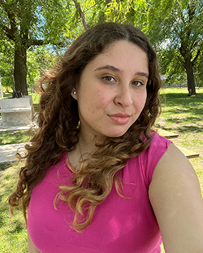
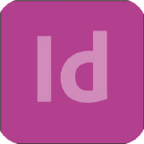

Estudiante universitaria de Diseño y Comunicación Visual, actualmente cursando el tercer año de la carrera. Me caracterizo por ser una persona responsable, organizada y comprometida, con buena capacidad para trabajar en equipo. Busco incorporarme a una organización donde pueda aportar dedicación y buena predisposición.

Formación Académica
Universidad Nacional de Lanús
Año de inicio: 2024 | Actualidad
Colegio Armenio Jrimian
Título Secundario en Ciencias Sociales
Año de egreso: 2022
Experiencia Laboral
Cyber OK | Abril-2023
- Atención y asistencia a clientes.
- Cobro y manejo básico de caja.
- Asistencia en el uso de computadoras e impresión.
- Mantenimiento y organización del espacio de trabajo.
Habilidades personales
- Atención al cliente
- Trabajo en equipo
- Organización y responsabilidad
- Manejo de herramientas informáticas
- Manejo básico de caja
Diseño gráfico
Adobe Illustrator | Nivel: avanzado
Adobe Photoshop | Nivel: Intermedio

Adobe InDesign | Nivel: intermedio
Idiomas
Español: Nativo.